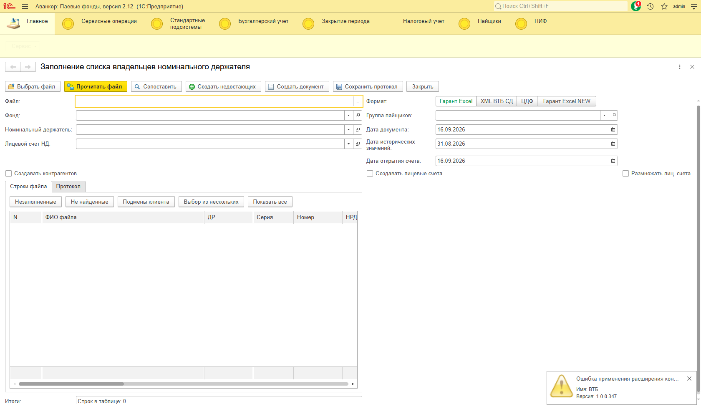
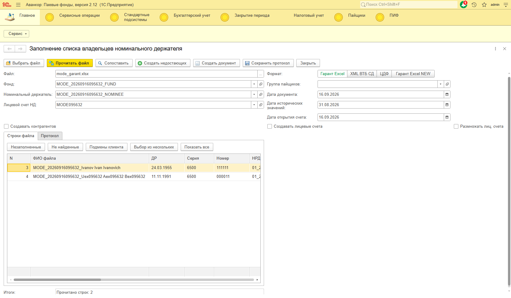
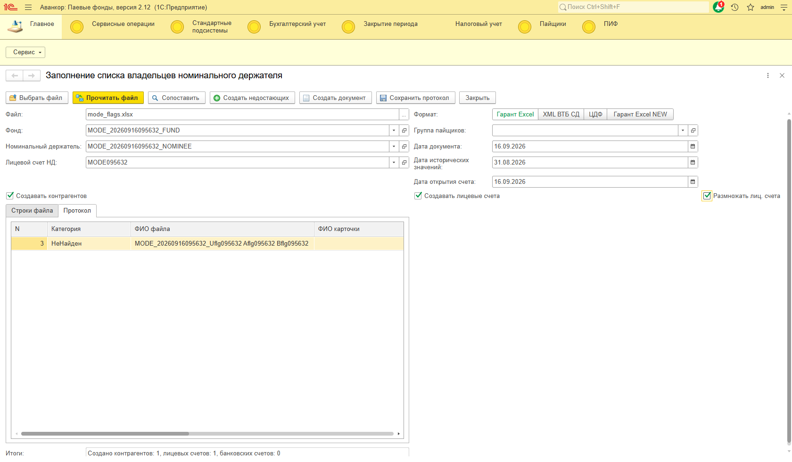
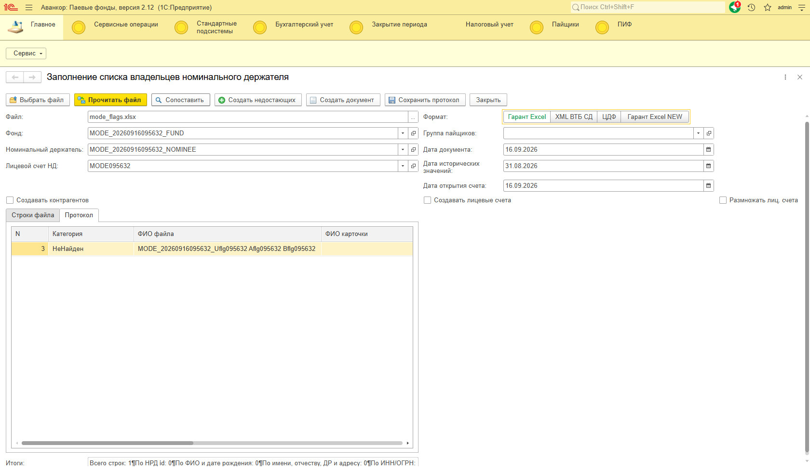

Дата: 16.09.2026. База Аванкор Паевые фонды (WIM_PIF). Обработка версии 1.0.3.
В прошлый раз прогнали полный путь «файл → сопоставить → создать → документ», но на форме остались режимы, которые сотрудник переключает руками. Этот прогон как раз про них: тумблер формата файла, три флажка и отборы таблицы.
На форме есть:
Программная проверка — через COM (Component Object Model, библиотека pywin32, объект платформы V83.COMConnector). Сессия: Connect, в конце CoUninitialize.
Параметры строки соединения: Srvr, Ref, Usr, Pwd, App, Locale.
pythoncom.CoInitialize()
com = win32com.client.Dispatch("V83.COMConnector")
# 1. Рабочее подключение этого прогона
conn = com.Connect("Srvr='localhost';Ref='WIM_PIF';Usr='admin';Pwd='1';App='PyCOM';Locale=ru_RU;")
# 2. То же, другое написание имени
conn = com.Connect("Srvr='localhost';Ref='WIM_PIF';Usr='Admin';Pwd='1';App='PyCOM';Locale=ru_RU;")
# 3. Файловый вариант (для сравнения)
conn = com.Connect("File='C:\\Bases\\WIM_PIF';Usr='admin';Pwd='1';App='PyCOM';Locale=ru_RU;")
Примеры запросов:
ВЫБРАТЬ КОЛИЧЕСТВО(РАЗЛИЧНЫЕ Ссылка) КАК Количество ИЗ Справочник.ЛицевыеСчетаПайщиков ГДЕ Пайщик.Наименование = &Имя И Владелец = &Фонд И НЕ ПометкаУдаления
ВЫБРАТЬ ПЕРВЫЕ 1 Ссылка ИЗ Справочник.ЛицевыеСчетаПайщиков ГДЕ Владелец = &Фонд И Пайщик = &Пайщик
Вызов методов обработки (безопасный режим выключен):
protection = conn.NewObject("ОписаниеЗащитыОтОпасныхДействий")
protection.ПредупреждатьОбОпасныхДействиях = False
proc = conn.ВнешниеОбработки.Создать(путь, False, protection)
proc.ПрочитатьФайлВТаблицу(файл, параметры) # формат 0 / 1 / 2 / 3
proc.СопоставитьСтрокиФайла(таблица, параметры)
proc.СоздатьНедостающихПоСтрокам(таблица, параметры)
Второй параметр Создать — безопасный режим. Если его не выключить, 1С не даст записать справочники. На форме те же флаги передаются в параметры начитки.
Проверка глазами пользователя — веб-клиент: открыли форму, переключили тумблер формата (это кнопки на шапке), прочитали каждый файл, включили и выключили флажки, нажали отборы таблицы.
Программа: 17 / 17 Форма в браузере: 33 / 34
Единственная красная отметка в браузере — ожидание «две строки после сопоставления», а в этом шаге специально читали файл с одной неизвестной строкой, чтобы проверить флажки. На форме строка была, отборы и создание сработали. По смыслу шаг успешный.
| Режим на форме | Статус | Что проверили |
|---|---|---|
| Гарант Excel | Успех | Две строки, НРД id в своей колонке, 10 паев. Известный пайщик найден по НРД id, неизвестный остался пустым. В браузере тумблер переключили, файл прочитался так же. |
| XML ВТБ СД | Успех | В XML нет НРД id. Строки читаются по номеру счета номинального держателя (MODE095632), 8 паев. Сопоставление — по ФИО и дате рождения. Чужой номер счета в том же XML отбрасывается: 0 строк. В браузере файл тоже дал 2 строки. |
| ЦДФ | Успех | НРД id в колонке 3, 12 паев. Сопоставление по НРД id. В браузере после клика «ЦДФ» прочитались те же 2 строки с тем же идентификатором. |
| Гарант Excel NEW | Успех | ФИО в первой колонке, колонки НРД нет. Дата рождения берется из текста регистрации. Сопоставление — по ФИО и дате рождения, 7 паев. В браузере режим тоже прочитался. |

Так форма выглядит при открытии: тумблер форматов справа от файла, три флажка выключены.

| Как на форме | Статус | Что получилось |
|---|---|---|
| Оба флажка создания выключены (как при открытии) | Успех | Команда «Создать недостающих» ничего не заводит: контрагентов 0, счетов 0. Так и должно быть: сначала можно только посмотреть, кого не нашли. |
| Создавать контрагентов — да, лицевые счета — нет | Успех | Появилась 1 карточка, лицевых счетов 0. Флажки независимы. |
| Оба флажка создания включены | Успех | Программа: карточка 1 и два счета. Веб-клиент: «Создано контрагентов: 1, лицевых счетов: 1» по файлу с одной неизвестной строкой. |
| Размножать лиц. счета — нет | Успех | Один пайщик в файле дважды. В базе один лицевой счет, обе строки на него. |
| Размножать лиц. счета — да | Успех | Тот же пайщик дважды. В базе два технических счета.
Запрос после записи вернул количество = 2.
ВЫБРАТЬ КОЛИЧЕСТВО(РАЗЛИЧНЫЕ Ссылка) КАК Количество ИЗ Справочник.ЛицевыеСчетаПайщиков ГДЕ Пайщик.Наименование = &Имя И Владелец = &Фонд И НЕ ПометкаУдаленияпараметры: имя тестового пайщика, фонд тестового прогона |

| Кнопка | Статус | Что увидели |
|---|---|---|
| Не найденные | Успех | Осталась строка без способа сопоставления. |
| Незаполненные | Успех | Осталась строка без карточки. |
| Подмены клиента | Успех | В этом файле подмен не было — таблица пустая. Кнопка не падает. |
| Выбор из нескольких | Успех | В этом файле спорных карточек не было — таблица пустая. Кнопка не падает. |
| Показать все | Успех | Снова видна исходная строка. |
| Вкладка «Протокол» | Успех | Категория «НеНайден» по неизвестному пайщику. |

Раньше на форме проверяли в основном один режим: Гарант Excel и оба флажка создания включены. Сейчас прошли все четыре формата и все три флажка, плюс отборы.
Ошибок платформы и ошибок в коде 1С в этом прогоне нет. Флаг размножения счетов после проверки довели до рабочей логики: без него счет общий, с ним на повтор строки заводится отдельный технический счет.
Обработку в этих режимах можно давать сотруднику: переключение формата на форме меняет чтение файла, флажки меняют, что будет записано в базу.